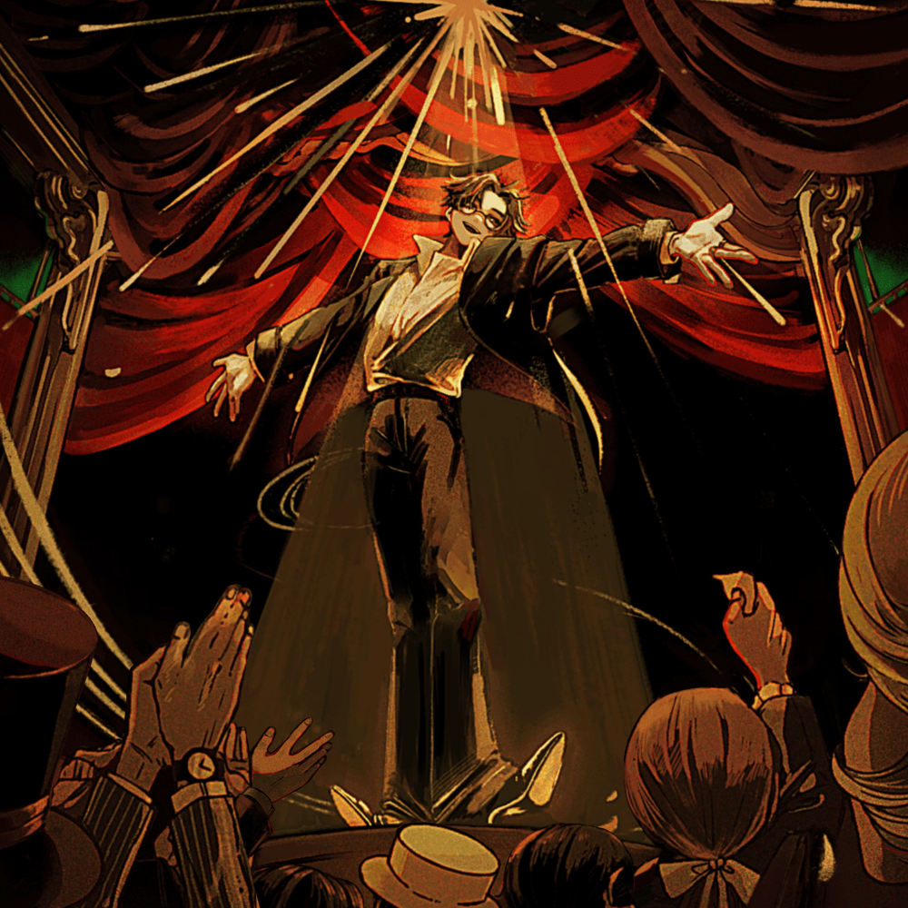

English Lyrics
[Verse 1]
Ah, there's no escape
Alone, a hole in a life like garbage
Already forgotten
Should I live the same 'normal' as those days?
Is that the right thing to do?
Yes, in the long run, it's like a comedy
It's actually a complete lie
Once again, becoming a slave to freedom
Everyone seems to sing happily
[Chorus]
Filling the stomach with lies, starving for hunger
Irony wandering around everyone
In the continuing nightmare
I was waiting for you
With a love that lacks words, ripening
Rotting like fruit
It's terribly beautiful, shedding tears
Ah, is it time up?
[Verse 2]
Living just as you say
Living just as I say
What did that teach us?
The parts close to roots and trunks are completely blackened
[Chorus]
Until it becomes a secret, until it turns into a lie
Until it gets hurt, gets dirty
In the continuing nightmare
Surely, even if you're not there
The vow that lacks words will soon fade
Even time leaves me behind
Everything is beautiful, to the point of laughter
Well, time's up
[Instrumental Break]
[Bridge]
Until it becomes a secret, until it turns into a lie
Until it gets hurt, gets dirty
In the continuing nightmare
Surely, even if you're not there
[Chorus]
Killing me with a love that lacks words
Even if you're not there
I let go of love again
What a comedy! All that's left is lies
[Chorus]
Killing me with a love that lacks words
I'm breaking down
Going mad like a beast
It's the punishment I couldn't act out
Romanized Lyrics
[Verse 1]
A, nigemichi ga nai no
Hitori, garakuta no yona seikatsu ni suita ana
Mo, wasurete shimatte
Ano, hibi to onajiyona
"Futsu" o ikireba i?
So, nagai me de mireba kigeki no yo
Hontoha, mattaku no uso
Mata, jiyu no dorei ni natte iku
Minamina, Tanoshi-so ni utau
[Chorus]
Uso de i o mitashite, ue ni uete iku
Darekare mo samayoeru aironi
Zutto, tsudzuku akumu no naka de
Boku wa, anata o matteita tte
Kotoba-tarazuna ai de, yueni urete iku
Kudamono no yo ni kusatte iku
Sore ga hidoku utsukushikute, namida o koboshita
A, kore de jikangire?
[Verse 2]
Akumade, anata no iutori ni ikite
Akumade, watashi no iutori ni ikite
Sore de, nani ga wakatta?
Ne ya kan ni chikai bubun wa, makkuro ni yogorete iru
[Chorus]
Himitsu ni naru made, uso ni kawaru made
Kizutsuite, yogorete shimau made
Zutto, tsudzuku akumu no naka ni
Kitto, anata ga inai to shitatte
Kotoba-tarazuna chikai mo, jiki ni asete iku
Jikan sura, boku o oite iku
Dore mo, kore mo utsukushi nda waraeru kurai ni
Mo, kore de jikangire
[Instrumental Break]
[Bridge]
Himitsu ni naru made, uso ni kawaru made
Kizutsuite, yogorete shimau made
Zutto, tsudzuku akumu no naka ni
Kitto, anata ga inai to shitatte
[Chorus]
Kotoba-tarazuna ai de, boku o koroshite
Soko ni wa, anata ga inakutatte
Hitotsu, mata ai o tebanashita
Nante, kigekida! Nokotta mono wa uso dake
[Chorus]
Kotoba-tarazuna ai de, boku wa kowarete iku
Kemono no yo ni kurutte iku
Sore wa enji kirenakatta, boku e no batsuda